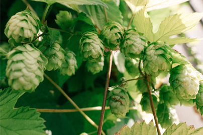
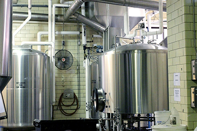

La Storia
Accenni alla storia della birra

La birra è una delle prime bevande alcooliche al mondo ad essere stata prodotta: si ritiene che sia nata nella zona della Mesopotamia nel settemila a.C. circa.
Storicamente la birra ha accompagnato l'uomo sin dall'inizio dello sviluppo dell'agricoltura fino ai giorni nostri, attraversando ere ed evolvendosi nel tempo.
Le prime birre erano ricavate dalla fermentazione spontanea dell'amido: ciò avveniva grazie ai batteri presenti nell'aria che attivavano il processo di fermentazione,
questo ha portato ai primi prototipi di birra.
Esistono tre macrocategorie di birra: le birre a fermentazione spontanea, le Ales e le Lager.
Queste tre categorie si sviluppano storicamente nell'ordine descritto in base ai metodi attraverso cui sono state prodotte: le prime derivano dalla fermentazione
spontanea del malto perciò sono più facilmente producibili; mentre le Ales derivano da una lavorazione più approfondita su malto e lieviti, grazie allo sviluppo di alti forni;
infine le Lager sono frutto di una lavorazione ancora più accurata e "artificiosa" degli ingredienti, resa possibile dalle moderne tecnologie industriali.
Produzione della birra

Per essere prodotta la birra ha bisogno di 4 ingredienti fondamentali: acqua, un malto di cereali, lieviti e luppolo. Senza di essi, non si può parlare di birra.
Brevemente, si parte dal malto tostato, immerso nell'acqua calda e successivamente aromatizzato con luppoli a caldo o freddo.
Al mosto ricavato si aggiungono i lieviti per far partire la fermentazione, infine si rimuove il lievito usato e si imbottiglia, dopo un' opportuna
maturazione se necessaria.
•Le birre a fermentazione spontanea si ricavano da un malto di cereali, lasciato a fermentare nell'acqua in vasche aperte.
•Le Ales richiedono che il malto venga prima cotto ad alte temperature in altiforni, successivamente questo viene lasciato fermentare con lieviti specifici ad una temperatura di 15-20 gradi C° al chiuso.
•Le Lager sono le ultime ad entrare in scena nell'universo birrario: sono caratterizzate da malti poco tostati e da una fermentazione che avviene ad una temperatura di 5-10 gradi C° al chiuso.